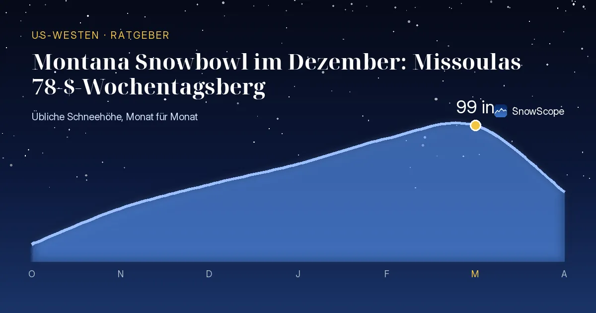

Montana Snowbowl im Dezember: Missoulas 78-$-Wochentagsberg
Montana Snowbowl liegt nah bei Missoula mit fairen Preisen: 78 Dollar für eine Tageskarte unter der Woche in der Saison 2026/27. Das steile Gelände und kurzen Abfahrten ziehen Einheimische an. Der Schneefall ist über den Berg verteilt – oben baut sich bis Mitte Dezember eine sichere Schneedecke auf, aber unten bleibt es bis in den frühen Winter dünn.
Die Live-Schneeprognose für Montana Snowbowl in der SnowScope-AppSchneehöhen, Pulverschnee-Alarme und 3D-Karte, gratis.
Das Skigebiet und die Tageskarte
Snowbowl erstreckt sich von 1.522 m an der Talstation bis 2.296 m am Gipfel, hat 6 Lifte und etwa 43 km Abfahrten. Es ist ein Ski-in-Ski-out-Gebiet ohne Dorf und ohne Schnickschnack – einfach steile Pisten in der Nähe der Stadt.
Eine Tageskarte kostet unter der Woche 78 Dollar, am Wochenende und an Feiertagen 85 Dollar. Eine Nachmittagskarte ab 12:30 Uhr kostet unter der Woche 72 Dollar und am Wochenende 77 Dollar. Der Indy Pass gilt auch hier: Eine Base Pass (419 Dollar) oder Indy+ Pass (469 Dollar) beinhaltet zwei Tage pro Partnergebiet.

Wo der Schnee Mitte Dezember am dicksten ist
Mitte Dezember liegen oben auf Snowbowl typischerweise 93 cm, in 91 % der Winter über 50 cm. Am Mittelhang (1.909 m) sind es durchschnittlich 76 cm, in 83 % der Winter über dem Schwellenwert für guten Schnee. Unten bleibt es weit zurück: typisch 40 cm, und nur in 28 % der vergangenen Winter erreichte man 50 cm.
Der Unterschied wächst durch den Dezember. Am Weihnachtstag liegen oben typischerweise 113 cm und am Mittelhang 95 cm, während unten 49 cm stehen. Zum Jahreswechsel ist der Unterschied noch größer: oben 125 cm, Mittelhang 100 cm und unten nur 53 cm.

Zuverlässigkeit nach Woche
Anfang Dezember ist Snowbowl riskant. In der Woche vom 30. November bis 6. Dezember hatten nur 20 % der vergangenen Winter guten Schnee unten, gegenüber 67 % am Mittelhang und 78 % oben. Selbst der Mittelhang liegt unter 70 % Erfolgsquote.
Die Chancen verbessern sich stetig. In der zweiten Dezemberwoche (7.–13. Dezember) erreicht der Mittelhang 83 % und oben 89 %. In der dritten Woche (14.–20. Dezember) bleibt der Mittelhang bei 83 % und oben bei 93 %. Die Weihnachtswoche ist am zuverlässigsten: 91 % der Winter brachten guten Schnee zum Mittelhang und 96 % nach oben.
Wie es diese Saison aussieht
Am 13. November zeigte die Prognose 16 cm oben, 2 cm am Mittelhang und blanken Boden unten. Die nächsten sieben Tage sollen oben und am Mittelhang je 8 cm, unten 6 cm bringen.
Frühjahrsschnee hier ist dünn und verteilt. Felsen oder Ausapperungen sind im November auf allen Höhen normal. Der letzte Winter hatte am 15. Dezember 76 cm am Mittelhang – ein guter Start. Die erste Hälfte der vergangenen Winter hatte an diesem Datum typisch 88 cm, die zweite Hälfte 71 cm.
Snowbowl gegen Bridger Bowl und Lookout Pass
Bridger Bowl bei Bozeman kostet online 86 Dollar (99 Dollar am Schalter) und hatte typisch nur 51 cm Schnee am Mittelhang bis Mitte Dezember über alle Winter, die Hälfte davon über 50 cm. Lookout Pass westlich auf I-90 kostet unter der Woche 63 Dollar mit Reservierung und hatte 75 cm – mehr als Snowbowls 76 cm, aber später in der Saison höhere Preise.
Für Dezember bietet Snowbowl das beste Preis-Leistungs-Verhältnis der drei. Sein Gelände ist steiler als Lookouts, und seine Dezember-Erfolgsquote am Mittelhang ist höher als Bridgers. Wenn du eine Wochentag-Tour im frühen Dezember planst und über 1.800 m fahren kannst, ist Snowbowl die logische Wahl.
Was ein schwacher Dezember bringt
Die ersten 15 Winter (1980–81 bis 1994–95) hatten am typischen 15. Dezember 88 cm am Mittelhang, und jeder einzelne Winter überschritt 50 cm. Die letzten 15 Winter (2011–12 bis 2025–26) fielen auf 71 cm mit 80 % über dem Schwellenwert. Schneemuster haben sich leicht zu schneeärmeren Frühjahrszeiten verschoben.
Wenn Dezember trocken wird, fahre die oberen präparierten Pisten und kontrolliere vor jedem Tag die Schneekarte für das nächste System. Die Zufahrtsstraße zum Gipfel ist steil und eng: Ketten oder Winterreifen sind essentiell. Bevor du abseits der Piste fährst, konsultiere das Gallatin National Forest Avalanche Center.
Tipps für Skifahrer
- Buche einen Wochentag: 78 Dollar Tageskarte schlägt 85 Dollar am Wochenende, und die Nachmittagskarte kostet nur 72 Dollar.
- Vermeide die Talstation im frühen Dezember; zielen auf Mittelhang und darüber ab, wo Schnee früher kommt und länger bleibt.
- Die Straße zum Gipfel ist steil und eng: Winterreifen oder Ketten sind essentiell, besonders nach Neuschnee.
- Frühjahrsschnee ist oft fleckig und dünn; erwarte Felsen oder Ausapperungen unten bis November.
- Bevor du abseits der Piste fährst, prüfe die aktuelle Lawingewarnung des Gallatin National Forest Avalanche Center.
Zu diesen Zahlen
Die Schneehöhen der Skigebiete sind der meiste Schnee in den oberen Hängen am angegebenen Tag; es sind Schätzungen für eine Fläche, keine Messung an einem Punkt. Prognosen können sich ändern. Lies vor dem Freeriden immer den offiziellen Lawinenlagebericht.
Offizielle Lawinenlageberichte: Gallatin National Forest Avalanche Center
Diesen Bericht zitieren
Für Forschung, Lehre oder Presse: Zahlen und Grafiken sind unter CC BY 4.0 mit dieser Quellenangabe frei nutzbar.
SnowScope (2026), Montana Snowbowl im Dezember: Missoulas 78-$-Wochentagsberg, https://snowscope.app/blog/de/2026/11/montana-snowbowl-missoula-december-cheap-skiing.html, abgerufen am 2026-11-14
SnowScope (Atlas Labs). (2026, November 14). Montana Snowbowl im Dezember: Missoulas 78-$-Wochentagsberg. SnowScope snow reports. https://snowscope.app/blog/de/2026/11/montana-snowbowl-missoula-december-cheap-skiing.html
BibTeX
@misc{snowscope2026montanasnowbowlmissoulad,
author = {{SnowScope (Atlas Labs)}},
title = {Montana Snowbowl im Dezember: Missoulas 78-$-Wochentagsberg},
year = {2026},
month = nov,
howpublished = {\url{https://snowscope.app/blog/de/2026/11/montana-snowbowl-missoula-december-cheap-skiing.html}},
note = {Published 2026-11-15 09:34 UTC; accessed 2026-11-14}
}· CC BY 4.0 · Methoden, Daten und Werkzeuge →
Montana Snowbowl: Schnee und Temperatur nach Höhe, dieser Winter vs letzter (Werkzeuge) →
Montana Snowbowl folgen
Gratis: eine Nachricht, wenn Neuschnee kommt, und jeden Morgen die Vorhersage.